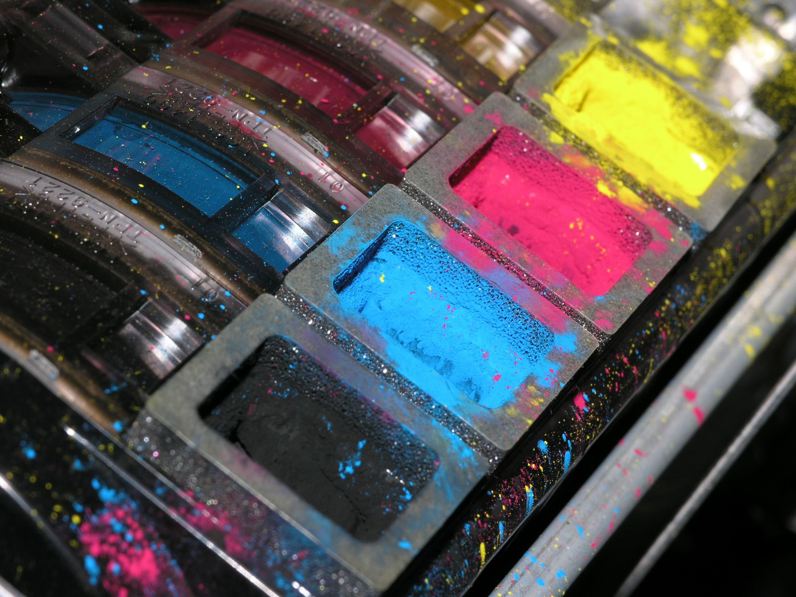
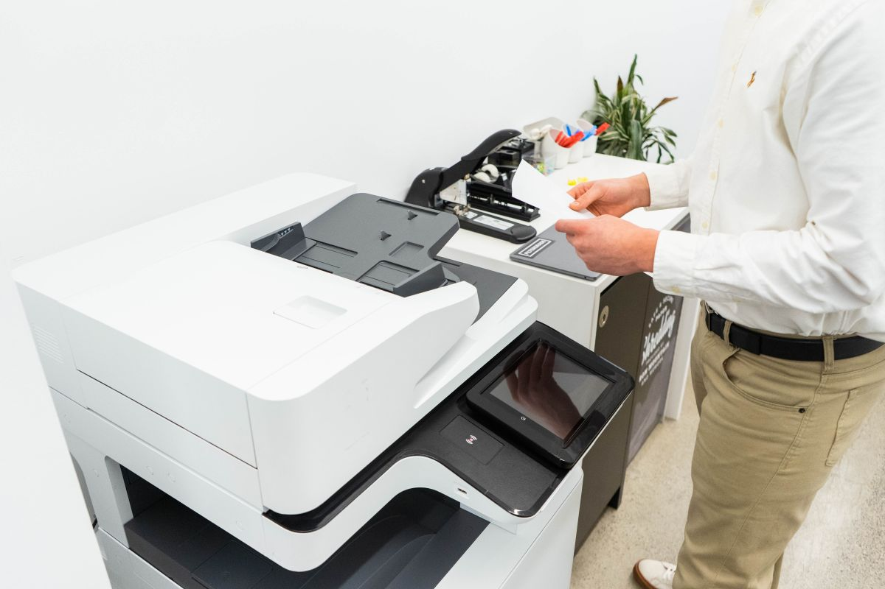
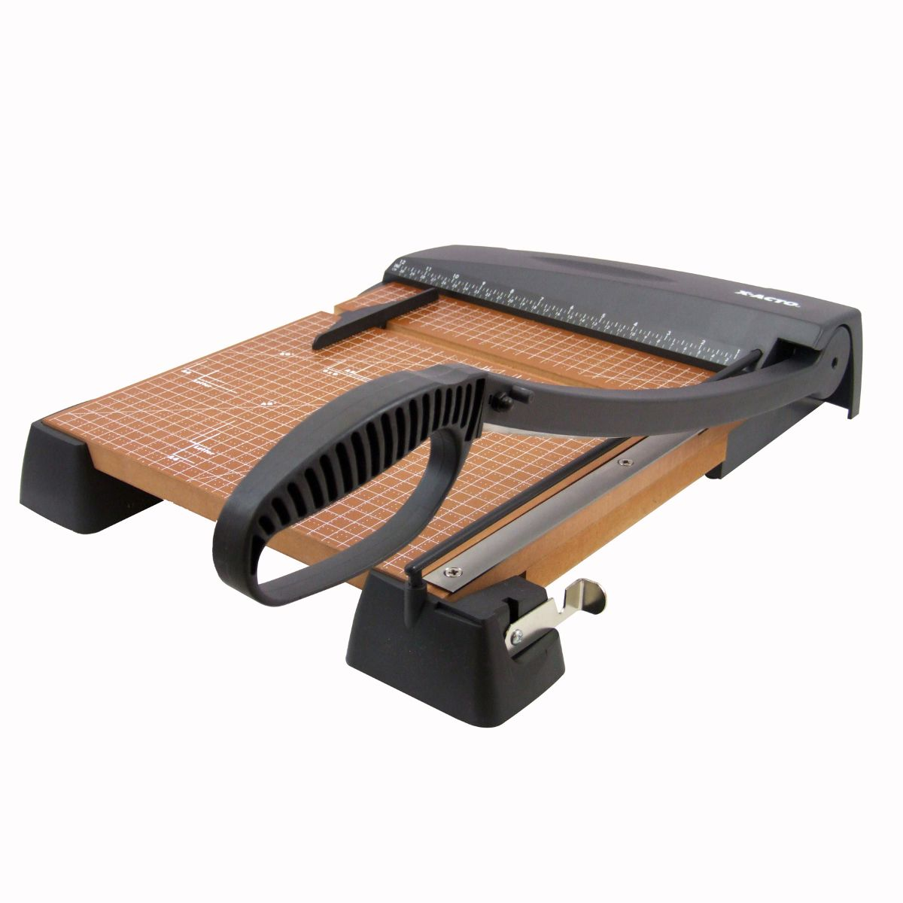

Imprenta y bazar · Sargento Aldea 446, Santiago Centro
Lo mandas hoy. Lo retiras impreso.
Fotocopias e impresiones al momento; tarjetas, volantes, pendones y anillados con fecha. 454 reseñas con 4,7 en Google, a pasos del Metro. Y desde ahora, cotización sin venir.
- 454reseñas en Google
- 4,7de promedio
- 446Sargento Aldea, Santiago Centro
- 1WhatsApp para cotizar
La pieza firma
Cotiza sin venir.
Lo que hoy se hace en el mesón, desde el teléfono: eliges el trabajo, la cantidad y para cuándo, y la página arma el mensaje con todo lo que la imprenta necesita para responder con un precio. No hay precios en la página a propósito: cada trabajo se cotiza con su archivo a la vista.
Cuánto se demora
| Fotocopias e impresiones | En el momento |
|---|---|
| Anillado y plastificado | En el momento, según la fila |
| Volantes y afiches | 1 a 2 días |
| Tarjetas de presentación | 2 a 3 días |
| Pendones | 2 a 4 días |
| Con diseño | Se suma 1 a 2 días |
Los plazos parten cuando el archivo está aprobado, no cuando se manda el mensaje.

Lo que se imprime bien empieza en el archivo.
La mitad de las tarjetas que salen borrosas venían borrosas: una foto de WhatsApp, un logo de 200 píxeles, un Word que cambió de fuente en el camino.
Antes de mandar
El archivo que imprime bien.
Cinco cosas que ninguna imprenta del centro explica por escrito. Con esto, el trabajo sale a la primera.
-
PDF antes que Word
El Word se abre distinto en cada computador y se mueven las fuentes. Exporta a PDF desde el mismo programa: «Guardar como» y eliges PDF.
-
300 puntos por pulgada
Una imagen que en la pantalla se ve bien puede salir pixelada en papel. Para una tarjeta de 9 × 5 cm, la imagen debe tener al menos 1063 × 591 píxeles.
-
3 milímetros de sangrado
Si el fondo llega hasta el borde, tiene que pasarse 3 mm más allá del corte. Si no, queda un filo blanco en algún lado: la guillotina no es una regla.
-
CMYK, no RGB
La pantalla mezcla luz; la imprenta mezcla tinta. Los colores muy brillantes de pantalla salen más apagados en papel. Si el color es importante, pide una prueba antes de la tirada.
-
Fuentes incrustadas o en curvas
Si usaste una letra especial, el PDF tiene que llevarla adentro. Al exportar, marca «incrustar fuentes»; si es un logo, mejor convertido a curvas.
¿Nada de eso? Manda lo que tengas igual. Se revisa en el mesón y se te dice qué falta antes de imprimir.
Qué imprimimos
Del documento de una hoja al pendón de dos metros.
Las fotocopias y las impresiones son lo verificado (está en el nombre del local). El resto es la lista habitual de una imprenta de centro, marcada como ejemplo hasta que la confirmen.
- 01
Fotocopias e impresiones
Blanco y negro y color, carta y oficio, desde una hoja. Desde el pendrive, el correo o el WhatsApp.
- 02
Tarjetas de presentación
Couché mate o brillante, una o dos caras, desde 100 unidades.
- 03
Volantes y afiches
Media carta, carta y A3; papel bond o couché.
- 04
Pendones
Lona con estructura o sin ella; medidas estándar y a pedido.
- 05
Anillado y encuadernación
Anillado plástico y metálico, tapas transparentes y de color; tesis y manuales.
- 06
Plastificado
Carnet, carta y oficio, brillante o mate.
El bazar: lo que también hay
Cuadernos, lápices, carpetas, sobres, cinta, corchetes, papel de regalo y lo que se olvida a última hora. Se compra al pasar a retirar lo impreso.
Dónde
Sargento Aldea 446, en el centro.
A pasos del Metro. Se retira lo impreso en el mesón; si se pidió por WhatsApp, ya está listo cuando llegas.
- Lunes, martes y viernes
- 11:00 – 14:30 y 16:00 – 19:30
- Jueves
- 16:00 – 19:30
- Miércoles y sábado
- Consultar
- Domingo
- Cerrado
Horario publicado en Google (27-08-2026); conviene confirmarlo por WhatsApp antes de ir con un pedido grande.
«Cuatrocientas cincuenta y cuatro personas salieron con algo impreso y volvieron a escribir. En el centro, eso es una imprenta de barrio.»
Papel y tinta
Lo que sale de la máquina.
Fotos del rubro, mientras llegan las del local.


Contacto
Un WhatsApp, y el archivo por el mismo chat.
Para cotizar, para preguntar si está listo y para mandar la corrección de último minuto.
- +56 9 8193 4386
- Dirección
- Sargento Aldea 446, Santiago Centro
- Retiro
- En el mesón, en horario de atención
Cómo se pide
- Arma la cotización con el formulario de arriba y mándala.
- Adjunta el archivo en el mismo chat, en PDF si puedes.
- Te contestan con el precio y la fecha. Si hay que ajustar algo del archivo, te lo dicen ahí.
- Retiras en el mesón, o pasas a ver la prueba si es una tirada grande.
Para la dueña o el dueño
Qué es esto y qué falta.
Qué es
Una propuesta de sitio web hecha por nuestra cuenta. Bazar July no la encargó ni la ha revisado. Dimos por cierto sólo lo público: las 454 reseñas con 4,7 en Google (27-08-2026), la dirección de Sargento Aldea 446, el horario publicado y el WhatsApp.
Qué es ejemplo
Las listas del formulario, los tiempos por trabajo, la lista de servicios aparte de fotocopias e impresiones, y el surtido del bazar. Todo va marcado con línea punteada. No hay precios a propósito.
Qué cambia con esta página
Hoy el que busca «imprenta Santiago Centro» encuentra a los que cotizan en línea. Esta página cotiza por WhatsApp sin instalar nada, explica cómo mandar el archivo para que salga bien a la primera, pesa menos que una foto y no carga nada de terceros.